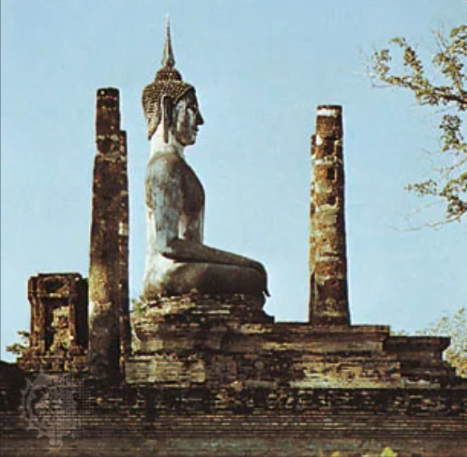

A survey of notable events and people in the history of Thailand. Located in the centre of mainland Southeast Asia, Thailand consists of two broad geographic areas: a larger, main section in the north and a smaller, peninsular extension in the south. Siam, as Thailand was officially called until 1939, was never brought under European colonial domination. Independent Siam was ruled by an absolute monarchy until a revolution there in 1932. Since that time, Thailand has been a constitutional monarchy, and all subsequent constitutions have provided for an elected parliament. Political authority, however, has often been held by the military, which has taken power through coups. During the last two decades of the 20th century and the first decade of the 21st, parliamentary democracy steadily gained wider popular support. Although a crisis emerged in 2006, when the military, aligned with the monarchy, overthrew an elected government, new parliamentary elections were held—as promised by the interim government—in 2007.
The kingdom of Sukhothai, situated in the upper Chao Phraya basin, was founded in the mid-13th century when a local Tai ruler led a revolt against Khmer rule at an outpost of the Khmer empire. Under its first two rulers, Sukhothai remained only a small local power. However, its third ruler, Ramkhamhaeng (reigned c. 1279–98), extended Sukhothai power to the south as far as Nakhon Si Thammarat, to the west into what is now Myanmar, and to the northeast as far as Luang Prabang in what is now Laos. Not all these territories were conquered by force; many became vassal or tributary states to Sukhothai on the basis of kinship ties or personal loyalty, and they were linked to it in a loose confederation.
Mongkut was succeeded by his 15-year-old son Chulalongkorn (Rama V; reigned 1868–1910). Because of Chulalongkorn’s youth, the country was ruled by a regent until the prince came of age in 1873. Chulalongkorn was faced with continuing Western pressure, and he maintained his father’s policy of making territorial concessions to the West in the hope that Siam could retain its overall independence. In 1893, after French gunboats forced their way up the Chao Phraya River to Bangkok, he was forced to cede to France all Lao territories east of the Mekong River, and in 1907 the French took over three territories in northwestern Cambodia and Lao territory west of the Mekong that had been under Siamese suzerainty. Two years later the Siamese government lost rights over four Malay states to the British. The creation of a modern military was in fact a direct response to the threat of domination Siam faced, particularly from France, in the late 19th century.